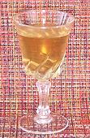

|
Simple SyrupWorldwide | ||||
| Makes: Effort: Sched: DoAhead: |
5 oz * 15 min Yes |
An essential for the Cocktail Bar, and with other uses as well. Extremely easy to make, and keeps in the fridge for at least a month. | |||
|
1/2 1/2 |
c c |
Sugar (1) Water |
Make - (15 min)
|